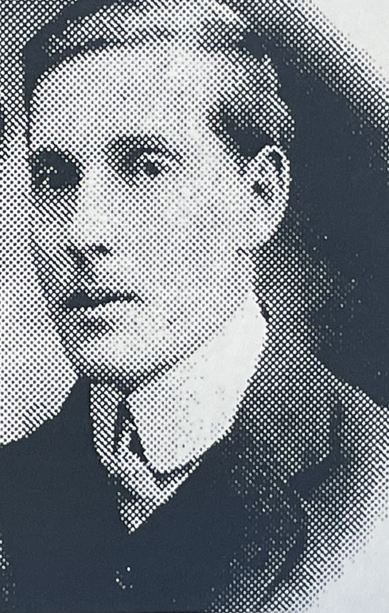
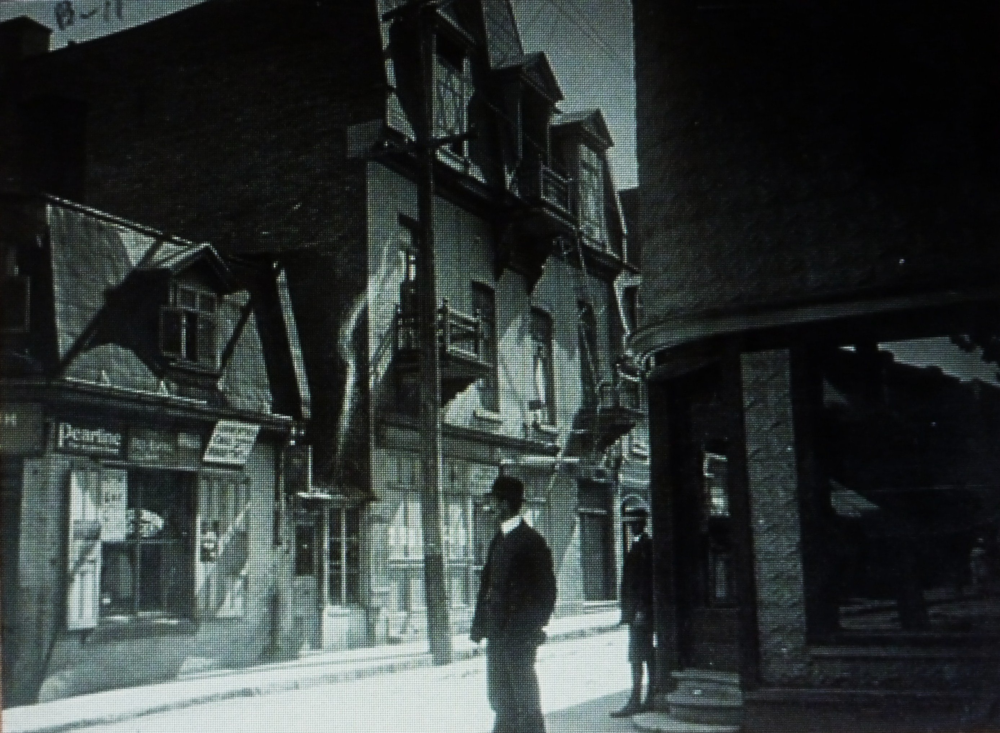
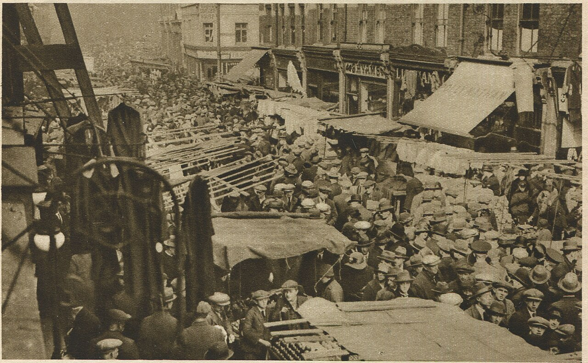
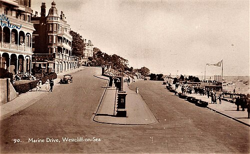
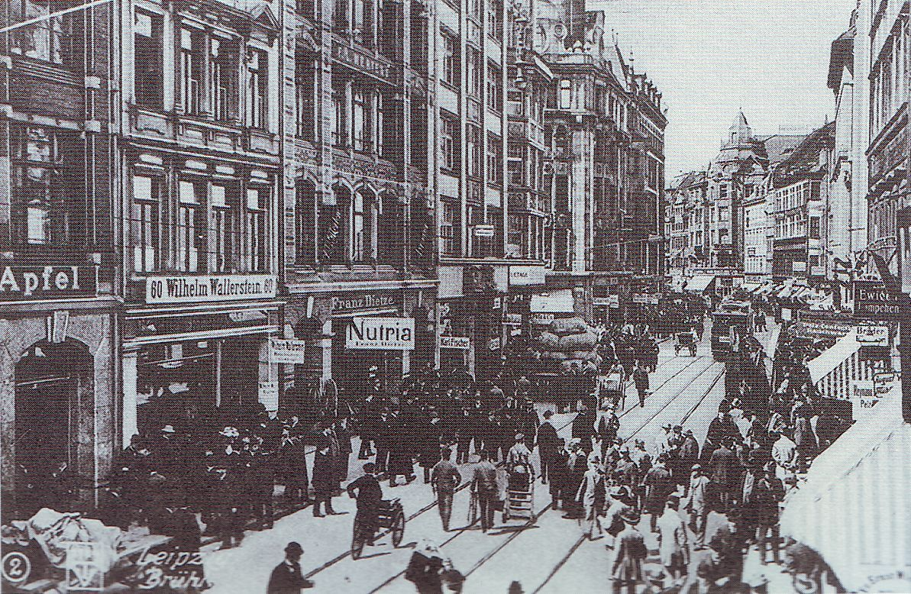
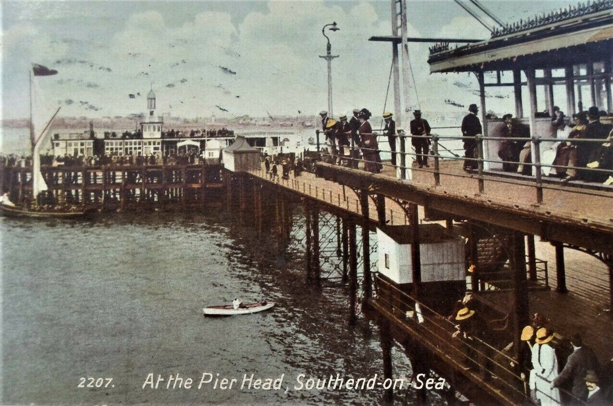
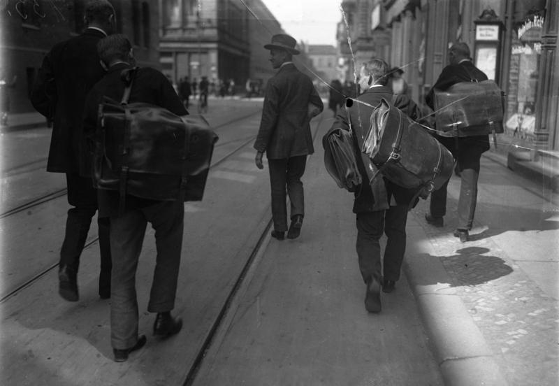

As far back as this family's own paper trail goes, it starts with a named rabbi: Tsvi-Hirsh HaLevy, born around 1785 in Keidan, in what is now Lithuania, married to a woman named Sirke, and titled head of a mesifta — an advanced Talmudic academy — in that town. The family surname itself seems to trace to this generation in a doubled form — HaLevy Yahalom, and separately Dimant — the Hebrew word for diamond and the Yiddish root sitting side by side a full century before anyone in this family had reason to translate one into the other.
One of his sons, Shlomo — also called Zalmen — was born in Keidan around 1805 and died forty years later in Korsovka, in what's now Latvia. He is the specific person, and generation, responsible for the move this whole project has been trying to reconstruct backward from thin evidence: the shift from the Lithuanian heartland to the small Vitebsk Governorate shtetl that Sam himself would later call home.
The story doesn't start with Sam and Dora. It starts with their grandparents' generation, in the small towns of the Latvian-Lithuanian , where Sam's family and Dora's family — both already carrying the Diamondstein name — were intertwined by cousinage and geography long before anyone wrote a letter worth keeping.

Dora's father Reuven and mother Hinde raised their children in this world; her brother Yehuda-Leib became learned enough that his son later wrote a full biographical account of him, which is how we know anything about that side of the family beyond what Sam's letters mention in passing.

But this generation's defining fact is that it didn't stay put. David and Keila-Tsirel's ten children — the generation just above Sam and Dora — scattered out of the Pale in every direction available to a Jewish family at the turn of the century: to Montreal, to London, to South Africa, to Palestine.
Their ten children scattered in almost every direction available to a Litvak family of this era. Zissa stayed in Lithuania and Latvia, dying in Birž in 1932. Tsvi-Hirsh and Zev-Wolf stayed in the Baltic region too, in Riga and Korsovka respectively. Reuven, Mordekhai ("Marks"), Rivka, and Meir all eventually reached London — Reuven becoming Dora's father, and simultaneously Sam's own uncle. Yeshaya, also known as Solomon, was the one who crossed instead to New York. And Getzel, who died young in Korsovka around 1890, became Sam's father — meaning Sam's own father never left the shtetl his own father had settled two generations before.
Not everyone in this family reached safety. One of David's granddaughters, through his daughter Zissa, had three of her own children still living in Korsovka in 1941 — the year the German occupation of Latvia brought the mass killing of Jewish communities across that entire region. The family's own tree marks three of them dead that year, in Korsovka, with their children. Two of their cousins, born in the same town a few years earlier, are marked instead as having reached what would become Israel. The same family, within a single generation, split between those who got out in time and those who did not.
Sam grew up in Korsovka, in this same world, the son of Getzel and (per family record, though not fully confirmed) Deborah Tomshinsky. He and Dora were cousins, and their families' paths ran close enough that by the time Sam was a teenager, marrying his cousin was already a plausible, half-expected future — if he ever came back from wherever he was about to go.
In 1901, around eighteen to twenty-one, Sam left Korsovka alone for Montreal — overland to a Channel port, then steerage across the Atlantic on one of the running Europe to Canada. It's the single decision that starts the correspondence: from this point on, whatever happens between Sam and Dora happens , across an ocean, for the next decade.
Sam's home region fed one of the best-documented transmigration systems of the era: the Wilson Line of Hull. By 1900, 45,548 Jewish transmigrants passed through the port of Hull alone in a single year — up from just 500 to 1,000 a year in the mid-1850s — a massive, organized operation rather than an improvised route. From Hull, most travelled by a dedicated boat train, the North Eastern Railway, straight through to Liverpool via Leeds, Huddersfield, and Stalybridge; in 1900 alone, over 31,000 transmigrants moved this way. It was, in effect, a sealed corridor — many people in Sam's exact position never really "entered" England at all in the sense of stopping to live there, just boarded a designated train at Hull and rode it to the next ship. Sam is first documented in Montreal on 11 June 1901, around age eighteen to twenty-one — an ordinary age for solo emigration, and a plausible one to have followed this exact route, though no ship manifest or travel record for his own crossing survives to confirm it. Whether he stopped meaningfully in London along the way, or passed straight through the corridor to Montreal, isn't known either way.

Montreal did not go smoothly. Sam crossed back and forth more than once across this decade, cycling through jobs that didn't last — and in 1907 the wiped out whatever he'd managed to build, for the second time.
The earliest letter in the whole archive, dated 11 June 1901, spells out exactly this kind of small, practical deception immigrants of the period sometimes had to make just to keep working: .

Just how bad Sam's own Montreal wages actually were is worth putting real numbers to, rather than taking his word for it. — 25 cents a day — improving later to "three or three and a half dollars" in a good week. For comparison: in 1900, New Orleans workers were already petitioning for a "living wage" floor of 25 cents an hour, eight hours a day — two dollars a day, proposed as bare subsistence, not comfort. Sam's initial rate was roughly one-eighth of what workers elsewhere were demanding as a subsistence minimum, two years before he wrote that letter. Even his improved rate doesn't hold up well against the era: American wage-earning men averaged $11.16 a week in 1905, and Montreal's own municipal street laborers were raised to $2.10 a day in 1912 — later than Sam's letter, and different work, but the closest same-city anchor available. Generously assuming his "three to three-and-a-half dollars" covered a full six-day week, that puts him at roughly a quarter to a third of a comparable Montreal laborer's wage just a few years on, and under a third of the 1905 U.S. average. His own words in the same letter — "life here is very dry" — read like plain description against these numbers, not homesick exaggeration.
Montreal wasn't the only alternative to giving up and sailing home, either — Sam turns over at least three others in these letters, none developed as far as the land-grant scheme. Winnipeg and Minnesota each surface only once, and only in passing. ; in another, already doing itinerant tailoring work after fleeing what he calls “wretched Canada,” . Chicago pulled harder and longer — it surfaces in five separate letters from this stretch, more than any option besides the homestead scheme. , he writes in one, jobless again; in another, . When he does go, in , he insists it isn't restlessness: “I want to do it to make a real life for myself — not to go chasing after fortunes for now in these golden lands.” Most of these letters carry no date of their own — assigned only an approximate 1907–1909 window from internal clues — and several run through low-confidence transcription spans; what the record shows clearly is Sam turning four different ways over, not committing to any of them, before Montreal fails him for the second time and London becomes the answer instead.
Of the options Sam was weighing his way out of Montreal, the one he put real thought into was a Canadian government land grant — worth being precise about which one, since the phrase "homestead grant" usually means something specific that doesn't quite match what he describes. The famous version, the Dominion Lands Act homestead, was free: 160 acres for a ten-dollar administration fee, in exchange for "proving up" over three years — building a permanent dwelling and hitting staged cultivation targets. (on the order of a thousand dollars, by his own account), a much smaller ten-acre parcel, and a house already provided — terms that line up far better with a different, lesser-known scheme: the "Ready-Made Farms" the Canadian Pacific Railway ran in Alberta and Saskatchewan in roughly this period, where the company built the house and barn, dug the well, and ploughed the land before a settler ever arrived, in exchange for real cash on landing. Neither match is exact — some of Sam's own figures are low-confidence machine-transcription guesses — but the shape of what he's actually weighing is a paid, furnished start on someone else's already-broken land, not the free frontier homestead the phrase might suggest to a modern reader.
By 1908, Sam gave up on Canada for good and went to London instead. It's the decision that actually determines the rest of the story — made only after Montreal had already failed him twice, not as a first choice but as what was left.
The resolution comes in two letters that read like a before-and-after. — as soon as he gets work, he'll send for her. A month later, : work is secured, Montreal life is "very dry," and he'll do far better in London. Some of that apparent whiplash may not be whiplash at all: the Allan Line's Liverpool–Montreal mail service ran weekly, every Thursday, with the crossing itself taking five to five and a half days on its newest turbine steamers — genuinely fast for the era, when most transatlantic crossings still ran seven to ten days. Add the wait for the next Thursday sailing on either end, and a single letter's real transit time could run anywhere from about six days, if timed well, to twelve or thirteen, if it just missed one. Two letters posted a week or so apart, each responding to something the other hadn't seen yet, could easily read like a sudden reversal without actually being one. Dora sends three pounds toward Sam's return ticket that August.
Sometime around February 1911, Sam and Dora married — who'd courted almost entirely by letter across an ocean for a decade. No photograph of the day survives. The marriage came with real money attached: Reuven's own signed obligated him to a fifty-pound dowry, quite possibly the first real capital Sam ever had, and five years later the seed money behind the fur business he was running by 1916.
Underneath all of this sits a document that survives in far better shape than any letter: the January 1908 tenaim, the traditional pre-wedding engagement contract, which Reuven and Sam's side both signed. It confirms in writing what the family tree only implies — Reuven ben David HaLevi obligating himself to give Sam a fifty-pound dowry "before the wedding," with a guarantor standing behind the promise, and a specific penalty built into the document itself: whichever side failed to keep its conditions would forfeit half a dowry. The same contract's wedding-expenses clause spells out exactly what that money was for in the most literal terms available — "Rabbi, Cantor, Shamash, and klezmer band" — a real wedding, budgeted for, in a document dated three years before Sam and Dora actually married in February 1911. Whenever that money actually changed hands, it may well have been the first real capital Sam ever had — possibly the seed money behind the fur business he's running by 1916.
By September 1916, Sam and Dora are married with children, running , Fur Dealers and , out of — home at 34 Alvington Crescent, Dalston, the earliest address this archive can attest to. It's a short chapter by letter count, but a real hinge: the courtship-at-a-distance voice of the last chapter gives way here to the provider-from-a-distance voice that defines the next decade.
It's worth pausing here on how this whole correspondence was even possible, because the answer isn't obvious from a modern vantage point. Home telephones were genuinely rare and expensive through this entire period — ownership was mostly confined to businesses and the wealthy, and a basic public call-box cost thirteen pounds to install as late as 1925 — roughly a month's wages for an ordinary labourer at the time. Private domestic telephones didn't become commonplace in ordinary households until well after the Second World War. Against that backdrop, the whole 140-plus-letter archive contains exactly one mention of a telephone at all: — not from his own home, but by walking to a relative's house to use hers. One borrowed-phone mention across more than four decades of family correspondence is itself the evidence that the telephone was a rare convenience here, not a routine channel, even for a comparatively comfortable London business family.
What made letters work instead was a postal system fast enough to make the absence of a phone a non-issue. Early-1900s London had four postal deliveries a day, the last as late as 9:30pm — routine enough that a letter posted in the morning could get a reply the same evening. That infrastructure explains why the correspondence reads the way it does: dashed off daily or near-daily during the 1908 Montreal courtship, weekly clockwork during the seaside years still to come, without any sense of a long wait for a reply. The corpus even shows a deliberate two-tier system underneath that rhythm — a quick, cheap postcard for a fast update, a proper letter reserved for anything that needed more room, with at least one letter explicitly correcting a family member's assumption that a postcard and a letter were the same thing.

Sam mentions that he and his friend John watched — “it was a fine sight” — then returns to asking after the at the seaside, in the very same paragraph.

Dora and the girls for weeks at a stretch — Margate, Ramsgate, Westcliff, Bournemouth — while Sam works London and buys fur on the Continent. Every summer, Dora and the girls went to the coast for a stretch. And on his buying trips Sam was away a few days at a time, and wrote home while he was gone.


Through these years, Sam's letters settle into a steady rhythm: a cheque folded into an envelope, then the same handful of questions about the children, the weather, whether they're behaving — asked and answered, week after week, for the better part of a decade.
The business, meanwhile, becomes genuinely wealthy. By the 1920s Sam is buying pelts by the thousand on — ninety stone martens and three thousand dyed moles in a single afternoon, at a steep markup over what he'd sell them for back home. The boy who once earned twenty-five cents a day in Montreal was, twenty years on, moving more money in an afternoon than most of Montreal ever paid him in a year.

Not every trip was just business. In January 1923, Sam's sister Sonia was hospitalized for an operation in Leipzig while he happened to be there buying stock — one of the few moments in the archive where family and trade share the same page.
The daughters, meanwhile, grow into correspondents of their own. — one of the only letters in this whole archive written in a child's own voice, not Sam's.



Not every plan came off.
Not every part of this story is in what the letters say. Some of the most telling moments here are in what they don't.
Of the letters in this archive, Sam is the confirmed author of at least 82. Not one is written by Dora herself. Her side of a decade of daily correspondence, and years more after that, simply doesn't survive — if it was ever kept at all.
Twice, a dozen years apart, Sam learns how Dora is really doing only through someone else — her father Reuven during their courtship, her sister Sarah after they were married. In the whole surviving archive, her own feelings never once reach us directly.

Nearly one letter in five that Sam wrote to Dora opens the same way: surprise, or hurt, that nothing arrived from her. The silence itself became its own kind of news between them.
From 1922 into the late 1930s, sixteen of Sam's letters home are written from Leipzig, Berlin, and Hanover — the exact years of the . Every one of them talks about hotels, prices, and missing home. Not one mentions politics at all.

And then, past the reach of any letter, the family's own memory carries the rest. Sam retired early — in his forties or fifties, for his health — but retirement didn't mean withdrawal: into his sixties and seventies he still went up to London most days, to sit with his old business friends and keep the daily rhythm of the trade long after the trade itself had ended. (This, and everything that follows, is family testimony, not drawn from any letter — the correspondence stops well before it.)
They kept the marriage that a decade of letters had built for sixty more years. By their diamond wedding anniversary in 1971 they had lost one daughter — Gladys, who died in 1951 — but gained grandchildren and great-grandchildren. In their later years they moved from Stamford Hill, the family's long-time home turf, out to Edgware, sometime in the early 1970s. Sam died in 1978, Dora in 1984 — both in their nineties. The cousins who had courted across an ocean, almost entirely on paper, outlived the letters by half a century.
One last thread, easy to miss because it plays out across decades rather than inside any single letter: the family's own name never stops quietly changing shape. “Dimantshtein” — Yiddish for “diamond-stone” — is how the family tree itself spells the name; “Diamondstein” is the standing English-language form for decades, on Sam's 1916 business letterhead and still in use as late as the 1942 War Damage notice, addressed to “H. Diamondstein, Esq.” That same week, a piano-shop invoice to the same household already reads “Mrs. Diamond” — the shortened, anglicized form arriving alongside the fuller name, not yet replacing it. Sam himself carries it one step further still, later in life: a business letterhead reading “S. DYMOND, Fur and Skin Merchant,” signed personally to a small child as “Great Grandpa and Great Granma Dymond.” That child was Paul — this project's own author, and Sam and Dora's great-grandson.
Not every branch of the family anglicized the sound of the name the same way — one branch translated its meaning instead. Yehuda-Leib, Dora's brother, emigrated to Jerusalem and died there in 1929, wounded during the Arab attacks on the Diskin Orphanage that were part of that year's Palestine riots. His son Avraham later adopted the surname “Yahalomi” — Hebrew for diamond, a direct translation of the same root rather than a softened English spelling of it. Two branches of one family, a generation apart, each solving the same problem — a foreign-sounding surname, in a new country — completely differently, depending on which country each one actually landed in: England sanded the sound down (Diamondstein to Diamond to Dymond), while Palestine translated the meaning instead. Same root word, two different assimilations, shaped entirely by geography.
None of this — not one letter, not one photograph, not one name change — would be sitting in front of a reader today by anything like a straight line. Robin, Gladys's own son, took a folder of these letters sometime in the 1960s, while living for a time with Sam and Dora themselves. In the 1990s he sent them on to Richard, Paul's brother, who was researching the family tree at the time and had asked relatives for whatever they had. Richard died in 1999. Paul found the letters years later, still sitting in his late brother's own files, and that — a three-generation chain of one relative's attic, a second relative's unfinished genealogy project, and a third relative's inheritance of both — is the entire reason any of this survived to become a project at all. The letters were never lost so much as quietly handed forward, once, by people who each had their own separate reason for holding onto them a little longer.
That's the whole of it — every date, every letter, and every honest guess this project could make from what actually survives. Where the record runs out, this account says so plainly, rather than filling in the rest by invention.
Thank you for reading.